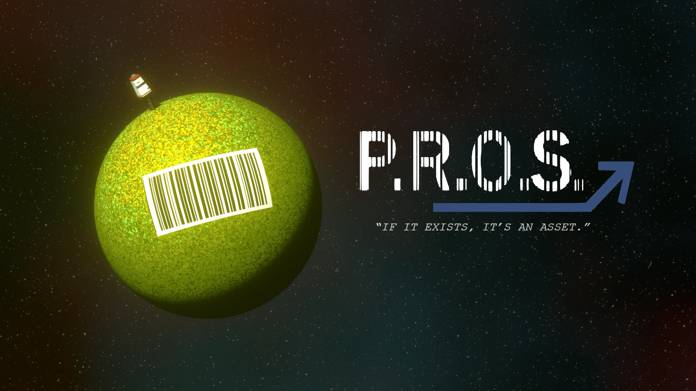
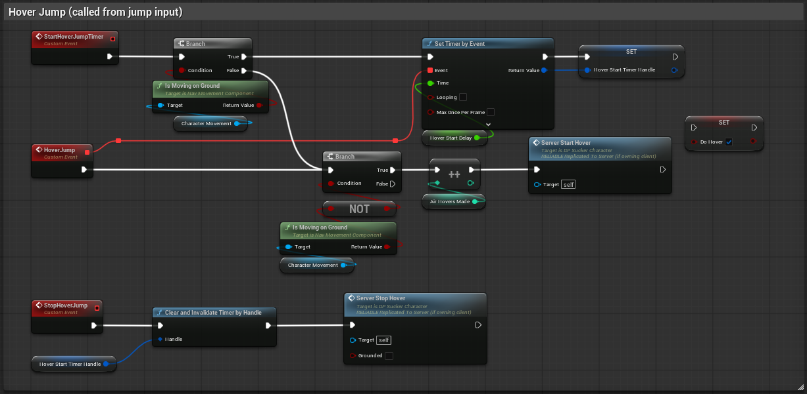
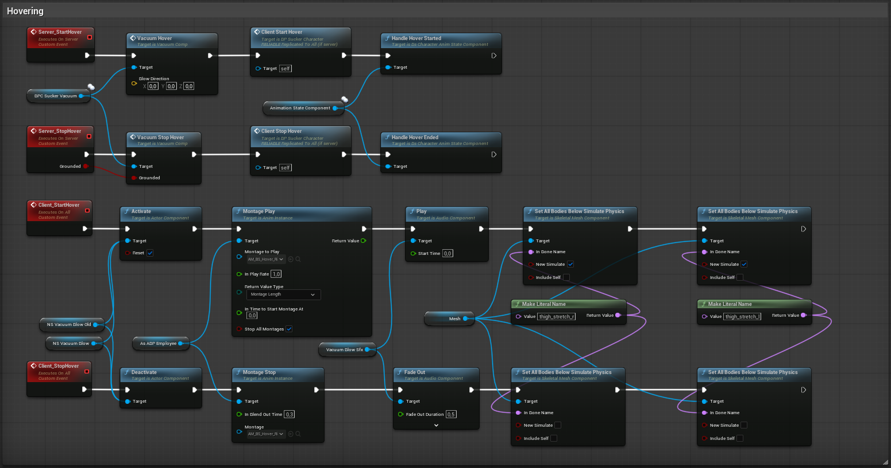
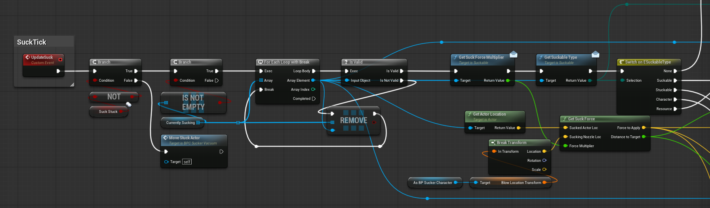
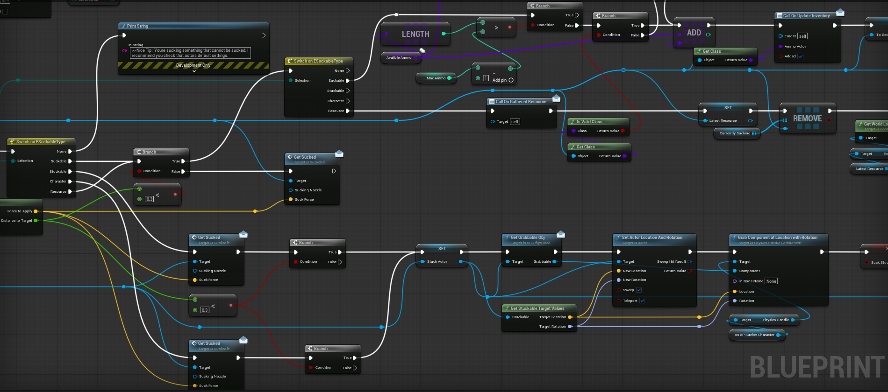
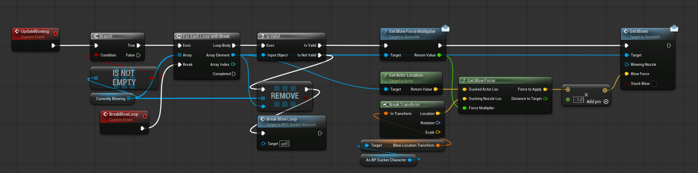
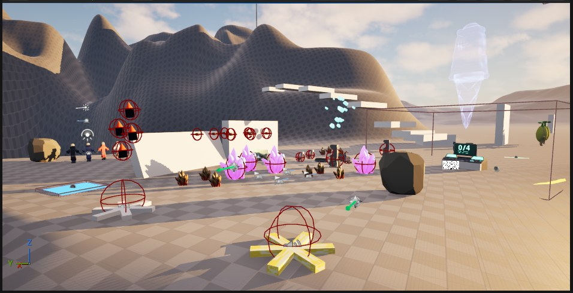
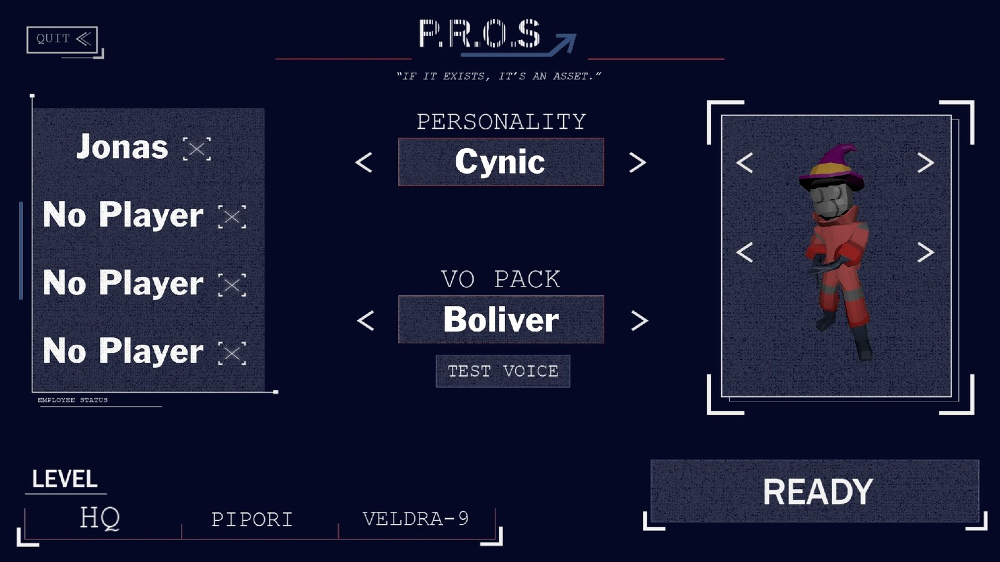

P.R.O.S
A four-player online physics-sandbox extraction shooter. I was project lead and lead programmer, built the player character and the vacuum's sucking and blowing, and wrote a replicated C++ component that lets designers create chemical reactions without code.
- My role
- Project lead (product owner), lead programmer
- Team
- 3 artists, 3 programmers, 4 designers
- Length
- 7 weeks, Futuregames
- Genre
- Online co-op extraction shooter, 4 players
- Tech
- Unreal Engine 5, C++, Blueprints, Perforce
What I solved
- Part 1 · Character controls The player character The team needed a playable character to build against within days.
- Part 2 · C++, Blueprints The vacuum The vacuum had to suck, blow and shoot almost anything, from loose props to other players.
- Part 3 · C++, replication Replicated chemistry Designers wanted chemical reactions that stay in sync online, without writing code for each one.
Part 1
The player character
The problem
Everything in P.R.O.S runs through the player and their vacuum, which is a weapon, a way to get around and a way to mess with your friends. The rest of the team needed a real, playable character to build levels and enemies against as early as possible, and its feel had to be tuned constantly.
What I built
I programmed the character in Blueprints to keep iteration fast. That let me prototype the feel and hand values over for tuning quickly. My parts were:
- A hover on the jump button: tap to jump, hold to keep going and the vacuum kicks in after a short delay, or press jump in mid-air to hover straight away
- While hovering, the legs below the thighs switch to physics simulation so they dangle, together with a hover montage, the blow effect and its sound
- All of the player's netcode, in Blueprints: input goes to the server as a reliable RPC, the server runs the vacuum, and a multicast plays the effects, animation and sound for everyone
Result
A character controller up and running within a few days, so the rest of the team could start building against a real, playable character almost immediately.

Hover jump: hold on the ground or press in the air, then off to the server. 
Hovering: the server runs it, and a multicast plays the effects, montage, sound and dangling legs.


Part 2
The vacuum
The problem
The vacuum is the game's main tool: players suck, blow and shoot objects, enemies and even each other with it. It had to work on almost anything in the world, and different things needed to react differently: some become ammo, some are resources for the team's quota, and some, other players included, get stuck in the nozzle to be fired back out.
What I built
A Suckable interface in C++ that everything the vacuum can affect implements: get sucked toward the nozzle, get blown away, or get stuck in the nozzle and shot back out. Every object responds through the interface, which is implemented once on the base class for props and once on the base class for characters.
- A type per object (Suckable, Stuckable, Character or Resource) decides how it reacts
- Separate suck, blow and shoot-from-nozzle force multipliers, tuned per actor in the editor
- A Blueprint vacuum component that, every tick, turns the distance to the nozzle and each object's multiplier into a pull. Blowing reuses the same force, reversed
- At the nozzle, Suckables become ammo, Resources count toward the quota, and Stuckables and characters are held in place with a physics handle until they're fired out
Result
Players could pull, push and fire nearly anything at each other, teammates included, and that one tool became the source of most of the game's chaos.

Suck tick: get each object's multiplier and type, and work out the pull. 
What happens per type at the nozzle: ammo, a resource, or stuck. 
Blow tick: the same force, reversed.


/*
*Define this objects behavior when interacted with thorugh the vacuum
*/
UENUM(BlueprintType)
enum class ESuckableType : uint8
{
None UMETA(DisplayName = "None"),
Suckable UMETA(DisplayName = "Suckable"),
Stuckable UMETA(DisplayName = "Stuckable"),
Character UMETA(DisplayName = "Character"),
Resource UMETA(DisplayName = "Resource")
};How an object reacts to the vacuum. A Stuckable object gets stuck in the nozzle and can be fired back out.
/**
* Inhaling the object, moving it toward the vacuum nozzle
*/
UFUNCTION(BlueprintNativeEvent, BlueprintCallable, meta = (Category = "Suckable"))
void GetSucked(USceneComponent* SuckingNozzle, FVector SuckForce);
/**
* Exhaling the object, moving it away from the vacuum nozzle
*/
UFUNCTION(BlueprintNativeEvent, BlueprintCallable, meta = (Category = "Suckable"))
void GetBlown(USceneComponent* BlowingNozzle, FVector BlowForce, bool StuckBlow);Two of the interface's events. They're native events, so each base class and Blueprint can respond in its own way.
UPROPERTY(EditAnywhere, BlueprintReadOnly, Category="Suckable Settings")
ESuckableType SuckableType;
UPROPERTY(EditAnywhere, BlueprintReadOnly, Category="Suckable Settings")
float StuckableNozzleOffset = 50.0f;
///Handles "suck" force
UPROPERTY(EditAnywhere, BlueprintReadOnly, Category="Suckable Settings")
float SuckForceMultiplier = 1.0f;
///Handles "blow" force
UPROPERTY(EditAnywhere, BlueprintReadOnly, Category="Suckable Settings")
float BlowForceMultiplier = 1.0f;
///Handles force when shot from being stuck in a players nozzle
UPROPERTY(EditAnywhere, BlueprintReadOnly, Category="Suckable Settings")
float StuckShootForceMultiplier = 1.0f;The per-actor settings designers tune in the editor. The character base class has the same set.
Part 3
Replicated chemistry
The problem
Designers wanted chemical reactions in the world: fire, water and electricity affecting objects and enemies. Writing code for every reaction wouldn't scale, and in a four-player online game every reaction also had to look the same for every player.
What I built
The ChemicalComponent, written entirely in C++ and built to be reused on any actor. In the editor, a designer gives a component the statuses it starts with, what it's susceptible to, and an overlap shape. Anything with a status spreads it to susceptible components it touches.
The server decides when a status is applied, and the active statuses replicate, so every client agrees on what is burning or electrified. Clients compare the old and new statuses when they change, to fire the right effects.
Result
None of the final reactions were hard-coded. By the last level, designers were chaining them: water puts out fire, electricity is stronger in water, and fire plus electricity spawns an explosion. They built all of that by combining starting statuses and susceptibilities.

// Active statuses on this actor
UPROPERTY(ReplicatedUsing = OnRep_ActiveStatuses, BlueprintReadWrite, EditAnywhere, Category = "Chemical")
FGameplayTagContainer ActiveStatuses;
// Starter statuses on this actor
UPROPERTY(Replicated, BlueprintReadWrite, EditAnywhere, Category = "Chemical")
TArray<FChemicalStatus> StarterStatuses;
// Active status DATA on this actor
UPROPERTY(Replicated, BlueprintReadOnly, Category = "Chemical")
TArray<FChemicalStatus> ActiveStatusesData;
/// What statuses this actor can receive
UPROPERTY(EditAnywhere, BlueprintReadWrite, Category = "Chemical")
TMap<FGameplayTag, FChemicalStatus> Suceptibilities;What designers set up per actor, and what replicates to clients.
bool UChemicalComponent::TryApplyStatus(FGameplayTag StatusTag, float Duration, bool bTicking)
{
if (!GetOwner()->HasAuthority())
{
GEngine->AddOnScreenDebugMessage(-1, 5.f, FColor::Red, TEXT("Spreader has no AUTH"));
return false;
}
if (!IsSusceptibleTo(StatusTag)) return false;
if (HasStatus(StatusTag)) return false;
FChemicalStatus* NewStatus = Suceptibilities.Find(StatusTag);
NewStatus->TimeRemaining = NewStatus->Duration;
ActiveStatuses.AddTag(StatusTag);
ActiveStatusesData.Add(*NewStatus);
NotifyStatusApplied(StatusTag);
UpdateTickState();
SpreadOverlap->SetCollisionEnabled(ECollisionEnabled::QueryOnly);
OnStatusApplied.Broadcast(StatusTag);
return true;
}Applying a status only happens on the server, and only if the actor is susceptible to it.
void UChemicalComponent::TrySpreadTo(AActor* OtherActor)
{
if (!OtherActor || OtherActor == GetOwner()) return;
UChemicalComponent* OtherChem = OtherActor->FindComponentByClass<UChemicalComponent>();
if (!OtherChem) return;
for (const FChemicalStatus& Status : ActiveStatusesData)
{
OtherChem->TryApplyStatus(
Status.StatusTag,
Status.Duration, Status.bTicking);
}
}Spreading: everything this actor has, it tries to pass on to whatever it overlaps.
Leading the project
On day one I had everyone list what they most wanted to build for their portfolio, and we found our concept in the overlap: physics-chaos multiplayer that ticked almost everyone's boxes. From there I kept us prototyping fast, planned our sprints and wrote the build documents that became our backlog.

The levels
Three levels and an onboarding ship. The Pipori forest was the most iterated; on Veldra-9 the Drill bores through a giant casino.


Looking back
With a design background, I filled the design space more than I should have as project lead. It helped the team, but I came to Futuregames to grow as a programmer, so on my next projects I'm handing design decisions to others and staying in my technical lane.